Für
/baa52b85c066dbd5eeff3c078a69205b.png) , wird aus einer Weibull-Verteilung ein Wert
, wird aus einer Weibull-Verteilung ein Wert /6ed2bc3df66dd893aefb0808148ec57e.png)
Für , wird aus einer Weibull-Verteilung ein Wert
Es bestehen zwei Möglichkeiten:
Genau festgelegte Beobachtungen, wenn /291195d76d2cdc06ff5d726c3e142a88.png)
Die Wahrscheinlichkeitsdichtefunktion der Weibull-Verteilung und damit die Anteile einer genau festgelegten Beobachtung zur Likelihood wird gegeben durch:
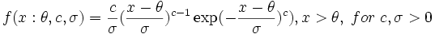
Wobei der
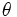
der Weibull-Formparameter und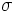
der angegeben. Und die restlichen 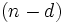
gegeben durch: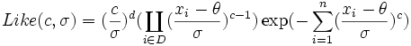
Wenn die Ableitungen
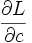
,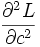
,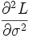
,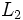
,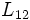
bezeichnet werden, dann sind die Likelihood-Schätzungen des Maximums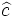
die Lösungen der Gleichungen :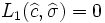
Schätzungen der asymptotischen Standardfehler von ? sind gegeben durch:
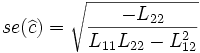
Ein geschätzter Korrelationskoeffizient von? wird gegeben durch:
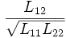